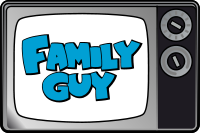

Padre de Familia
una serie de televisión animada estadounidense dirigida al
público adulto, creada por el director, guionista y cantante
Seth MacFarlane el 31 de enero de 1999. La serie se centra en
los Griffin, una familia disfuncional cuyos componentes son:
los padres Peter y Lois; sus hijos Meg, Chris, y Stewie; y su
perro antropomorfo Brian. La serie está situada en la ciudad
ficticia de Quahog, Rhode Island.
La serie fue creada por MacFarlane tras haber hecho dos
cortometrajes The Life of Larry y Larry & Steve. MacFarlane
rediseñó los protagonistas de los cortos hechos por él; Larry
y su perro Steve, llamándolos Peter y Brian, respectivamente.
MacFarlane entregó un piloto de 15 minutos a Fox que lo emitió
el 20 de diciembre de 1998. Después de la emisión del piloto
la serie recibió luz verde y comenzó su producción. Poco
después de terminar la tercera temporada de Padre de familia
en 2001, Fox canceló la serie, pero debido a la demanda del
público y el incremento de las ventas de los DVD más las
reposiciones en Adult Swim, la serie volvió en 2004
convenciendo a la cadena de que reemitieran la serie.
Historia

adre de familia se creó en 1999 tras (su predecesora) Larry Shorts
atrayendo la atención de Fox durante los anuncios en la Super Bowl
de 1999. Se anunció su cancelación, pero un cambio en la dirección
de la cadena y las demandas del público les hicieron reconsiderar
su postura, reanudándose en la tercera temporada, tras el final de
la temporada, la serie fue cancelada de nuevo. Las reposiciones en
Adult Swim impulsaron el interés de que el programa continuase,
más los beneficios en las ventas de los DVD en un año (2.2
millones de copias al año) renovaron el interés de la cadena.
Padre de familia volvió a la producción en 2004 produciéndose
cuatro temporadas más (de un total de siete) y una película
directa en DVD titulada Stewie Griffin: The Untold Story. La serie
celebró oficialmente el episodio 100 durante la sexta temporada en
otoño de 2007, consiguiente a la sindicación de la serie.
Actualmente, la serie tiene contratada hasta 2017 la producción de
nuevos episodios.
Trama
En la mayoría de episodios, la trama es interrumpida por al menos un sketch denominado flashback aleatorio. El segmento a veces guarda alguna relación con el argumento del episodio y contiene una referencia cultural. La mayoría de ellos, están interpretados por artistas invitados, a veces mediante rodaje en imagen real, incluyendo apariciones de Conway Twitty en tres episodios, Will Ferrell en Jungle Love y ocasionalmente mediante una combinación de imagen real con animación. Un ejemplo sería un baile de claqué entre Stewie y Gene Kelly en Road to Rupert. Algunos sketches han sido criticados duramente, bien por la crítica o por otros dibujantes, quienes comentan que la serie se centra demasiado en los flashbacks aleatorios en lugar del recurrente humor de la trama.
![]()